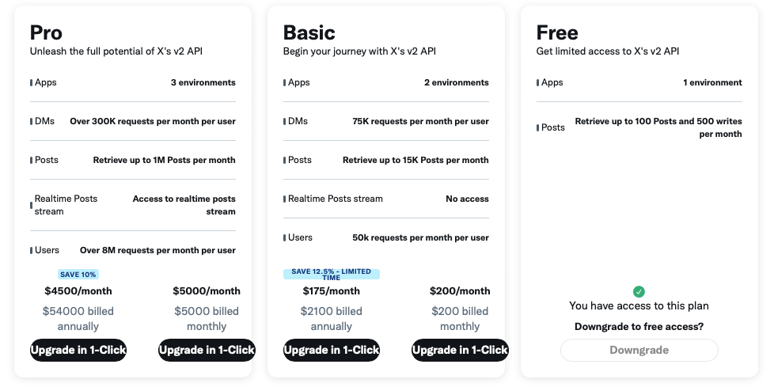
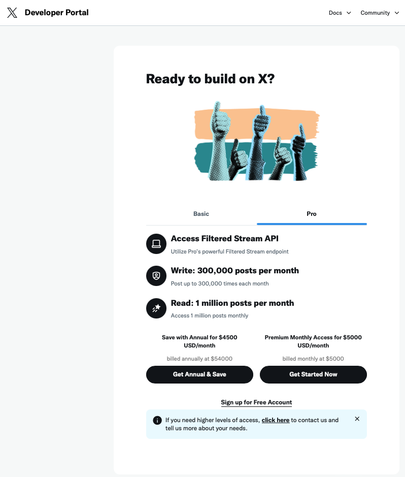
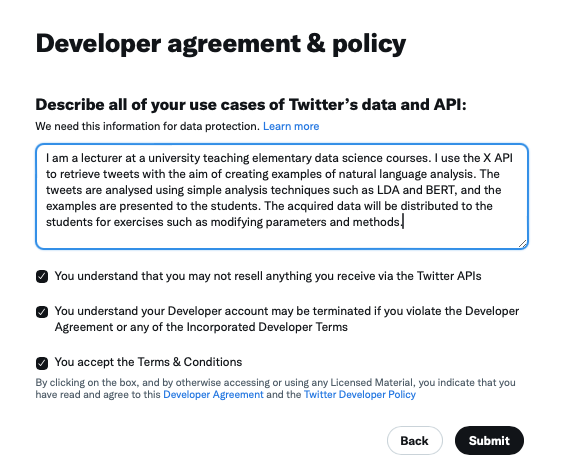
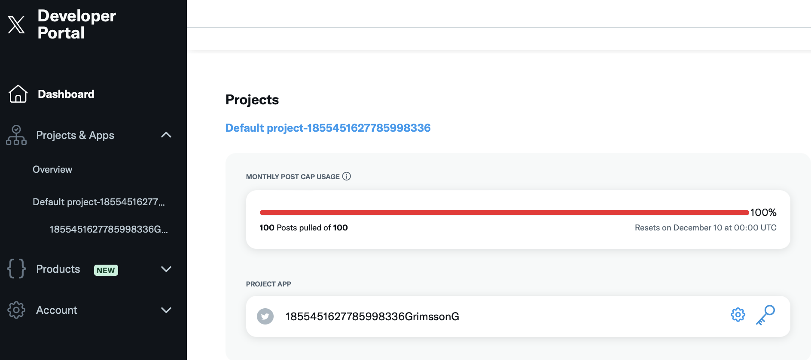
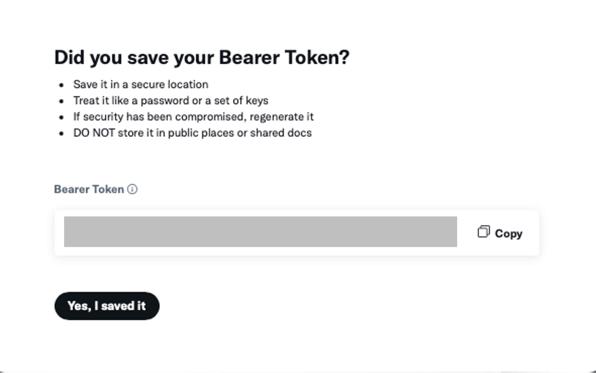

特別講義DS 補足B X(Twitter) APIによるデータの取得
資料
本資料は章番号外の補足資料です. X(旧:Twitter)のAPIを利用して呟きデータを取得する手順を扱います. 取得したデータを利用した分析 (ワードクラウド, トピックモデルなど) はCh15 自然言語処理で扱っています.
APIという仕組み自体の説明 (REST, HTTPメソッド, JSONなど) は補足Aにまとめてあるので, 馴染みのない人は先にそちらを読んでください. X.APIもRESTアーキテクチャで提供されており, 本資料ではGETメソッドだけを使います.
利用上の注意 (料金と制限)
これからX.APIにGETメソッドを利用し呟きを取得します. APIから返答されるデータはJSONですが,今回はJSONを直接触らず,これまでに扱ってきたCSVに変換します.
以下の処理はX APIの無料の範囲で行っていますので,誰でも再現できますが, アカウントの登録など手間が多く,また無料版のAPIでは15分に一回しかリクエストが送れないため,データの取得には最低でも15分かかります. 社長と社名が変わってからAPI機能が物凄く使いにくくなっており,値段も高額になっています.まともに研究で利用しようと思うと月5000ドルのAPI使用料を払う必要があります.2000ドルはこの講義のために払うのが難しいので,月200ドルのBasicプランであれば利用できるアカウントは準備しますが,Basicプランでは過去7日間の呟きしか取得できないので注意しましょう.

研究で利用する人以外は完成したこちらのデータをダウンロードして利用しましょう (Ch15の分析はこのデータで進められます).
認証トークンの発行
XのAPIを利用するには,認証トークン(Bearer Token)を発行する必要があります.認証トークンとはX.APIにアクセスするための認証情報です.
Xのデベロッパー用ページからまずはサインアップします.
今回は無料版を利用するので, Sign up for Free Accountをクリックしましょう.

利用目的を尋ねられるので,250文字以上の英文で回答しましょう. その他のチェックを入れて,次に進みます.

左のメニューのDashboardに表示されているProject APPのKeys and Tokens(鍵)ボタンを押します.

Bearer TokenのRegenerateをクリックするとBearer Tokenが表示されます. クリップボードにコピーしてどこかに保存しましょう.このトークンは一度しか表示されません.忘れた場合は別のトークンを再生成する必要があるので注意しましょう.

認証トークンは補足AのAPIキーと同様にパスワードと同じ扱いをしてください. ソースコードに書いたままファイルを提出・共有・公開すると漏洩します. 漏洩した場合はRegenerateで再生成しましょう.
取得プログラム
取得したトークンを利用してプログラムを書いていきます. APIを操作するためのライブラリrequestsをインストールしておきましょう.
uv add requests pandasまずは認証トークンを設定します.先ほど取得した認証トークンをbearer_tokenという変数に格納し,API呼び出し時に利用します(YOUR_BEARER_TOKENの部分を書き換えましょう.)
import requests #HTTPリクエストを送るためのライブラリです.このライブラリを使ってAPIにアクセスします.
import pandas as pd
# 認証トークン
bearer_token = 'YOUR_BEARER_TOKEN'X.APIの「検索」機能にアクセスするためのURLを指定します. ここでは,最近のツイートを取得するエンドポイントsearch/recentを指定しています. search/recentでは直近7日間のつぶやきを取得できます. それ以上過去のつぶやきはProアカウントでしか取得することができません.
# Twitter APIのエンドポイントURL
search_url = "https://api.x.com/2/tweets/search/recent"取得対象のキーワード（検索ワード）を指定します.このコードでは「国民民主党」に関するツイートを検索します.一つのプログラムで複数のワードを取得することも可能ですが,X.APIの無料版では,15分に1回しかリクエストが送れないため,複数のワードで検索するにはコード内で15分間待機する機能を入れる必要があるので今回は一つだけ検索してみましょう.
tweet_countで各検索で取得するツイート数の上限です.無料版のAPI機能では, 1ヶ月あたり100ツイートのみアクセスできるので,50にすると1ヶ月に2回アクセスできます. 1度失敗すると数を大幅に減らすか,1ヶ月待つか,課金する必要があるので注意して下さい.
# 検索ワード
word = "国民民主党"
tweet_count = 50認証トークンをリクエストヘッダーに追加するための関数bearer_oauth()を作成します.この関数で設定されたヘッダーを使って,X.APIへのリクエストが認証されます.
def bearer_oauth(r):
r.headers["Authorization"] = f"Bearer {bearer_token}"
r.headers["User-Agent"] = "v2RecentSearchPython"
return r指定されたURLにGETリクエストを送信し,APIのレスポンスを取得します.response.status_code != 200でAPIからエラーが返された場合,例外を発生させます.正常なレスポンスを受け取った場合,JSON形式でデータを返します.
def connect_to_endpoint(url, params):
response = requests.get(url, auth=bearer_oauth, params=params)
response.encoding = response.apparent_encoding
if response.status_code != 200:
raise Exception(response.status_code, response.text)
return response.json()特定の検索ワードに関するツイートを取得します. 検索パラメータをlang:jaに設定し,日本語のツイートに限定しています.
def fetch_tweets(word):
query_params = {
"query": f"{word} lang:ja",
"max_results": tweet_count
}
json_response = connect_to_endpoint(search_url, query_params)
tweets_data = json_response.get("data", [])
return [tweet["text"] for tweet in tweets_data]作成した関数を利用して,つぶやきを取得します.
def main():
all_tweets = []
print(f"{word}のツイートを取得中...")
tweets = fetch_tweets(word)
for tweet in tweets:
all_tweets.append({"Word": word, "Tweet": tweet})
if all_tweets:
df = pd.DataFrame(all_tweets)
df.to_csv("tweets.csv", index=False, encoding="utf-8-sig")
print("tweets.csvにデータを書き出しました。")
else:
print("取得したデータがありません。")コード全体は以下のようになります.
import requests
import pandas as pd
# 認証トークン
bearer_token = 'YOUR_BEARER_TOKEN'
# Twitter APIのエンドポイントURL
search_url = "https://api.x.com/2/tweets/search/recent"
# 検索ワード
word = "国民民主党"
# 取得する件数
tweet_count = 50
def bearer_oauth(r):
"""
Method required by bearer token authentication.
"""
r.headers["Authorization"] = f"Bearer {bearer_token}"
r.headers["User-Agent"] = "v2RecentSearchPython"
return r
def connect_to_endpoint(url, params):
response = requests.get(url, auth=bearer_oauth, params=params)
response.encoding = response.apparent_encoding
if response.status_code != 200:
raise Exception(response.status_code, response.text)
return response.json()
def fetch_tweets(word):
# パラメータの設定
query_params = {
"query": f"{word} lang:ja",
"max_results": tweet_count # APIの制限で一度に取得できるのは最大100件まで
}
# エンドポイントに接続してデータを取得
json_response = connect_to_endpoint(search_url, query_params)
tweets_data = json_response.get("data", [])
return [tweet["text"] for tweet in tweets_data]
def main():
all_tweets = []
# 検索ワードのツイートを取得してデータを集約
print(f"{word}のツイートを取得中...")
tweets = fetch_tweets(word)
for tweet in tweets:
all_tweets.append({"Word": word, "Tweet": tweet})
# データをDataFrameに変換してCSVに書き出し
if all_tweets:
df = pd.DataFrame(all_tweets)
df.to_csv("tweets.csv", index=False, encoding="utf-8-sig")
print("tweets.csvにデータを書き出しました。")
else:
print("取得したデータがありません。")
if __name__ == "__main__":
main()このコードで取得した50件の呟きをまとめたデータがこちらになります. このデータを利用した分析はCh15 自然言語処理に進んでください.